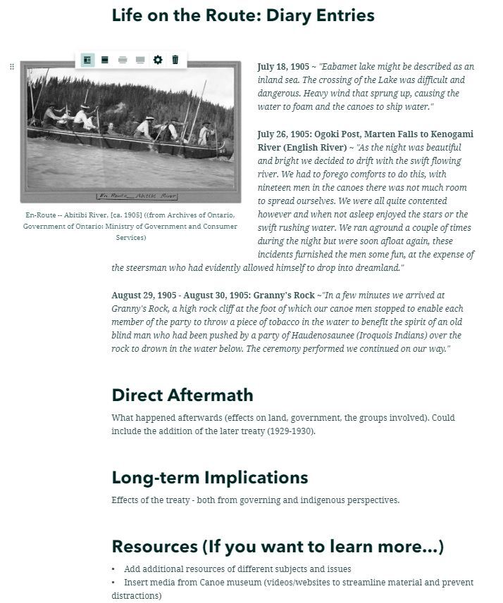

Our first order of business was to have a meeting with the client to determine their needs and wants, so we could determine how to best move forward
Once we determined that the client, Kelly, would like a more user-friendly interface that is more engaging and fun we needed to examine the various products
Product Exploration
Like a kid in a candy shop we set off exploring what ESRI had to offer us in the line of StoryMaps
We also looked at what others had done for Indigenous Treaty works using storymaps. In doing so we found something called Turtle Island

Time To Create!
Our next task was creating several rapid prototypes to determine how we wanted to display the maps and what we could do with it
Each team member created a rapid prototype for a storymap. We discussed and dissected them to see how it could be made to be more interactive
In the end we settled on something akin to what we had already seen in the Turtle Island storymap
The Product:
Each team member was tasked with creating an aspect of the StoryMap for the final product
They could use any version of a storymap they wished
Used buttons, quotes, images
The aim was to make it different, fun, and engaging for the average user
Once All were complete it was added to the main map in a pleasing and engaging way